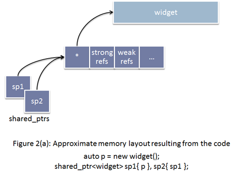
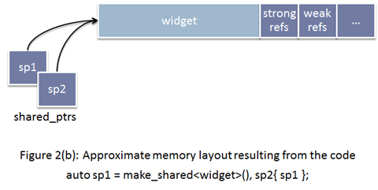

C++以及C++11之后的智能指针
智能指针类型
-
shared_ptr
C++11之后的标准智能指针。
引用计数机制，共享资源所有权，允许多个shared_ptr指向同一个对象。
-
weak_ptr
可以从shared_ptr或weak_ptr进行构造，构造和析构都不会引起引用计数变化，通常用来配合shared_ptr来实现互相引用。
-
unique_ptr
-
unique_ptr"唯一"拥有其所指对象，同一时刻只能有一个unique_ptr指向给定对象（通过禁止拷贝语义、只有移动语义来实现）。即unique_ptr没有拷贝函数：
unique_ptr<int> up(new int(0)); unique_ptr<int> cp1(up); // error unique_ptr<int> cp2 = up; // error unique_ptr<int> cp3 = std::move(up); // 正确，up所指向的内存转移到cp3，up不再指向该内存地址 -
auto_ptr不可作为容器元素，unique_ptr可以作为容器元素，如：
vector<unique_ptr<int>> vec; -
auto_ptr不可指向动态数组(尽管不会报错，但不会表现出正确行为)，unique_ptr可以指向动态数组，因为unique_ptr有unique_ptr
-
-
auto_ptr
独占所有权，当对auto_ptr进行赋值操作时，被复制的auto_ptr资源所有权会被转移到新的auto_ptr里面。※从C++11开始，auto_ptr已被弃用，C++11标准引入了unique_ptr和shared_ptr来替代
-
scoped_ptr
标准里没有引入boost的scoped_ptr
注意事项
-
std::make_shared
如果使用new分配内存并传进shared_ptr，会导致两次分配：

如果使用make_shared，只需要分配一次内存

通过make_shared生成的内存，会有等待所有强引用和弱引用（如weak_ptr）都计数为0时才会真正释放的问题。而通过new出来的内存则只需要强引用为0，则会立即释放。则会立即释放。更多详情：make_shared, almost a silver bullet